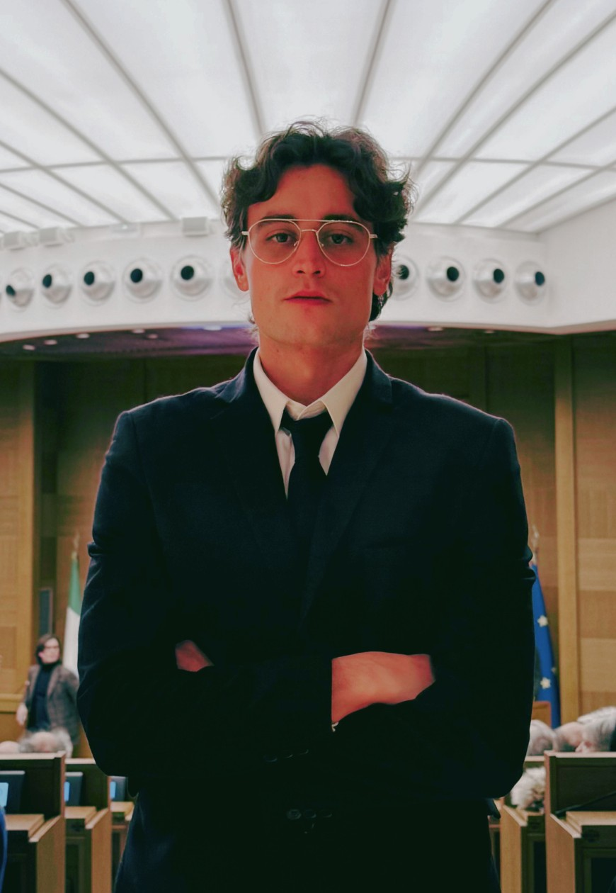

0
Progetti e prototipi operativi
Tool interattivi, dashboard industriali, simulatori tessili e moduli di process intelligence.
LiveDashboardSimulatori
Portfolio tecnico operativo — Prato
Tessitura · CAD moda · Supply chain · Industrial tech
Ogni progetto nasce come una scena: un filo, una macchina, un dato. Qui la filiera tessile diventa un mondo da attraversare, dove tradizione e controllo industriale si incontrano.

01 / Il mondo
Una mappa illustrata e animata: segui la navetta lungo il percorso produttivo e tocca le zone per aprire le aree del portfolio.
Zona selezionata
Telai, tintorie, magazzini e persone: ogni punto della mappa corrisponde a un modo di lavorare la materia.
Percorri la mappa con mouse o tocco: i telai si muovono, le luci cambiano e i cartelli mostrano la strada verso le aree.
Tool interattivi, dashboard industriali, simulatori tessili e moduli di process intelligence.
Tessitura, CAD moda, supply chain e workflow industriali.
Applicazioni navigabili per desktop, tablet e mobile.
Strutture React, moduli JS e architetture front-end scalabili.
Dal filo al dato: ogni interfaccia è progettata per essere usata in produzione, non solo mostrata.
02 / I progetti
Seleziona un progetto per aprirne la scheda: ogni card è un ingresso in una scena operativa della filiera.
Nessun progetto trovato.
03 / Il galà dei dettagli
Anche un ambiente di lavoro ha un suo bon ton: forma, misura, luce e comportamento corretto delle macchine.
Manuale della casa
Entra in punta di filo.
Prima di cambiare la macchina, osserva il tessuto e il rumore che fa.
Saluta la qualità.
Ogni difetto racconta una storia di tensione, umidità o fretta.
Non arrivare tardi al dato.
Un KPI letto tardi è un invito già scaduto.
«Gentile visitatore, nel distretto la fretta non fa il padrone: è la misura a decidere chi entra nel salotto e chi resta in cucina.»
Ingresso riservato
La mia idea di eleganza è semplice: niente gesti inutili, solo precisione visibile. La luce giusta, il filo giusto, il dato giusto.
04 / Tecnologia efficiente
Il comfort di un ambiente si misura in dettagli: temperatura stabile, luce scenica e consumi sotto controllo.
Clima intelligente
Regola la temperatura ideale per mantenere qualità e comfort in sala o in ufficio.
Luce scenica
La luce cambia la percezione dei colori e dei tessuti: prova un’atmosfera da sera.
Efficienza energetica
Attiva la modalità efficiente e osserva il consumo simulato delle ultime ore.
05 / Fiume e distretto
L’acqua ha nutrito il distretto; oggi la filiera si misura con sostenibilità, tracciabilità e strumenti digitali.
Prato ha trasformato la tessitura in un modello capace di rinnovarsi: recupero, rigenerazione e nuove tecnologie mantengono viva la tradizione senza renderla museo.
Il filo prende forma: proporzioni, tensioni e note colore decidono la tessitura.
Trama e ordito si intrecciano; la macchina diventa ritmo, controllo e memoria.
Il tessuto esce dal telaio e entra nel circuito di qualità, logistica e vendita.
Contatti
Collaborazioni su operations, supply chain, dashboard industriali e strumenti digitali per la filiera moda-tessile.